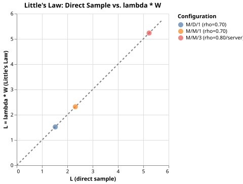

Little's Law
Little's Law states that in a stable queueing system, L = λW, where L is the mean number of customers in the system, λ is the mean arrival rate, and W is the mean time each customer spends in the system. The law holds regardless of arrival or service distributions, number of servers, or scheduling discipline.
The simulation verifies the law across three configurations:
- M/M/1 (Poisson arrivals, exponential service, one server)
- M/D/1 (Poisson arrivals, deterministic service, one server)
- M/M/3 (Poisson arrivals, exponential service, three servers)
For each configuration, L is measured two ways: by direct sampling of the queue length, and by computing λW from observed throughput and mean sojourn time.
Source and Output
"""Example: verifying Little's Law."""
import random
import statistics
from pathlib import Path
import altair as alt
import polars as pl
from prettytable import PrettyTable, TableStyle
from asimpy import Environment, Process, Resource
SEED = 192 # random seed for reproducibility
SIM_TIME = 20_000 # simulated time units per scenario
SAMPLE_INTERVAL = 1 # sim-time units between Monitor samples
SERVICE_RATE = 1.0 # exponential service rate (mu) for random service
DETERMINISTIC_SERVICE = 1.0 # fixed service time for M/D/1 (= 1/mu)
CHART_PATH = Path(__file__).parent.parent / "pages" / "tutorial" / "13_littles.svg"
class RandomCustomer(Process):
def init(self, server, in_system, sojourn_times):
self.server = server
self.in_system = in_system
self.sojourn_times = sojourn_times
async def run(self):
arrival = self.now
self.in_system[0] += 1
async with self.server:
await self.timeout(random.expovariate(SERVICE_RATE))
self.in_system[0] -= 1
self.sojourn_times.append(self.now - arrival)
class RandomArrivals(Process):
def init(self, rate, server, in_system, sojourn_times):
self.rate = rate
self.server = server
self.in_system = in_system
self.sojourn_times = sojourn_times
async def run(self):
while True:
await self.timeout(random.expovariate(self.rate))
RandomCustomer(self._env, self.server, self.in_system, self.sojourn_times)
class DeterministicCustomer(Process):
def init(self, server, in_system, sojourn_times):
self.server = server
self.in_system = in_system
self.sojourn_times = sojourn_times
async def run(self):
arrival = self.now
self.in_system[0] += 1
async with self.server:
await self.timeout(DETERMINISTIC_SERVICE)
self.in_system[0] -= 1
self.sojourn_times.append(self.now - arrival)
class DeterministicArrivals(Process):
def init(self, rate, server, in_system, sojourn_times):
self.rate = rate
self.server = server
self.in_system = in_system
self.sojourn_times = sojourn_times
async def run(self):
while True:
await self.timeout(random.expovariate(self.rate))
DeterministicCustomer(self._env, self.server, self.in_system, self.sojourn_times)
class Monitor(Process):
def init(self, in_system, samples):
self.in_system = in_system
self.samples = samples
async def run(self):
while True:
self.samples.append(self.in_system[0])
await self.timeout(SAMPLE_INTERVAL)
def run_scenario(label, arrivals_cls, lam, capacity):
in_system = [0]
sojourns = []
samples = []
env = Environment()
server = Resource(env, capacity=capacity)
arrivals_cls(env, lam, server, in_system, sojourns)
Monitor(env, in_system, samples)
env.run(until=SIM_TIME)
L_direct = statistics.mean(samples)
W = statistics.mean(sojourns)
lam_obs = len(sojourns) / SIM_TIME
L_little = lam_obs * W
error = 100.0 * (L_little - L_direct) / L_direct
return {
"label": label,
"lambda": round(lam_obs, 4),
"W": round(W, 4),
"L_direct": round(L_direct, 4),
"L_little": round(L_little, 4),
"error_%": round(error, 2),
}
def main():
random.seed(SEED)
rows = [
run_scenario("M/M/1 (rho=0.70)", RandomArrivals, 0.7, 1),
run_scenario("M/D/1 (rho=0.70)", DeterministicArrivals, 0.7, 1),
run_scenario("M/M/3 (rho=0.80/server)", RandomArrivals, 2.4, 3),
]
table = PrettyTable(list(rows[0].keys()))
table.align["label"] = "l"
for row in rows:
table.add_row(list(row.values()))
table.set_style(TableStyle.MARKDOWN)
print(table)
df = pl.DataFrame(rows)
max_val = max(df["L_direct"].to_list()) * 1.1
diagonal = (
alt.Chart(pl.DataFrame({"x": [0.0, max_val], "y": [0.0, max_val]}))
.mark_line(color="gray", strokeDash=[4, 4])
.encode(x="x:Q", y="y:Q")
)
points = (
alt.Chart(df)
.mark_point(size=100, filled=True)
.encode(
x=alt.X("L_direct:Q", title="L (direct sample)"),
y=alt.Y("L_little:Q", title="L = lambda * W (Little's Law)"),
color=alt.Color("label:N", title="Configuration"),
)
)
chart = (diagonal + points).properties(title="Little's Law: Direct Sample vs. lambda * W")
chart.save(str(CHART_PATH))
if __name__ == "__main__":
main()
Chart

Each point is one configuration. The dashed diagonal is the line L_direct = L_little; points on the diagonal mean the two estimates agree exactly.
Key Points
-
Monitorsamplesin_system[0]everySAMPLE_INTERVALtime units to estimate L directly without any queueing formula. -
The
error_%column shows that L_direct and λW agree to within less than 1% for all three configurations, even though the service-time distributions are completely different. -
DeterministicCustomeruses a fixedDETERMINISTIC_SERVICEconstant rather than a random draw; everything else in the simulation is unchanged. The law still holds. -
Resource(env, capacity=3)creates a three-slot server for M/M/3. The arrival rate is set to 2.4 so that utilization per server is 0.8.
Check for Understanding
run_scenario computes lam_obs = len(sojourns) / SIM_TIME rather than using
the nominal arrival rate passed to RandomArrivals.
Why is the observed throughput the right value to use in Little's Law, and when
would the two differ significantly?